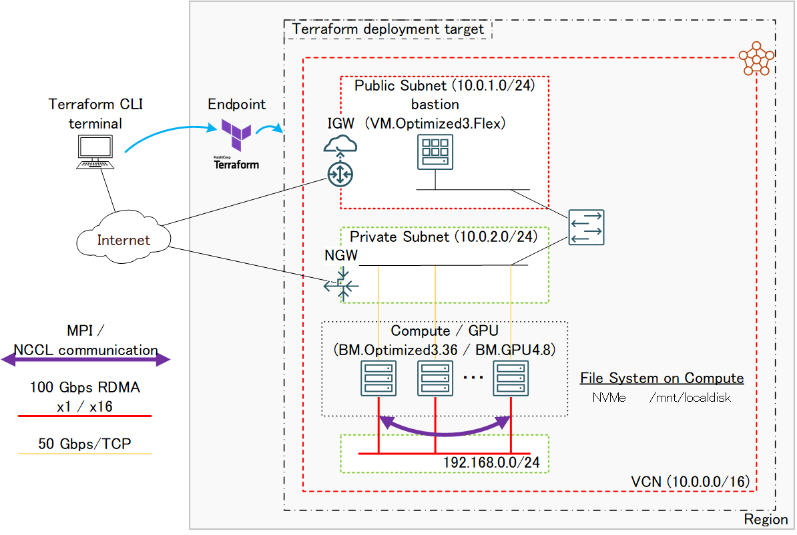
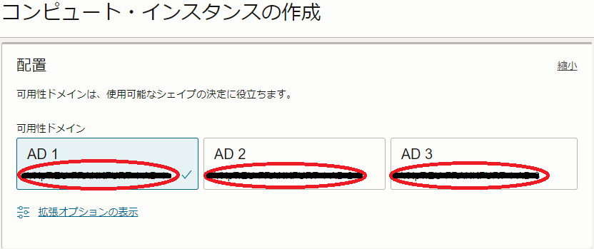

このチュートリアルは、HPC/GPUクラスタの計算/GPUノードに最適なベアメタルインスタンス（本チュートリアルではHPCクラスタ向けに BM.Optimized3.36 GPUクラスタ向けに BM.GPU4.8 を使用）を クラスタ・ネットワーク でノード間接続する、HPC/機械学習ワークロードを実行するためのHPC/GPUクラスタを構築する際のベースとなるインフラストラクチャを、これらを接続する仮想クラウドネットワークと共に予め用意された Terraform スクリプトを使用してTerraform CLIで自動構築、そのインターコネクト性能を検証します。
このチュートリアルで作成する環境は、ユーザ管理、ホスト名管理、共有ファイルシステム、プログラム開発環境、コンテナランタイム、ジョブスケジューラ等、必要なソフトウェア環境をこの上に整備し、ご自身の要件に沿ったHPC/GPUクラスタを構築する際の基礎インフラストラクチャとして利用することが可能です。
なお、これらのクラスタ管理に必要なソフトウェアの導入までを自動化する HPCクラスタスタック も利用可能で、詳細は HPCクラスタを構築する(スタティッククラスタ自動構築編) や GPUクラスタを構築する(スタティッククラスタ自動構築編) を参照ください。

所要時間 : 約1時間
前提条件 : クラスタ・ネットワークを収容するコンパートメント(ルート・コンパートメントでもOKです)の作成と、このコンパートメントに対する必要なリソース管理権限がユーザーに付与されていること。
注意 : チュートリアル内の画面ショットについては、OCIの現在のコンソール画面と異なっている場合があります。
0. Terraform実行環境構築
本章は、 Terraform CLIを使用してHPC/GPUクラスタのライフサイクル管理を実行するTerraform実行環境を構築します。
この実行環境は、インターネットに接続されたLinux・Windows・Macの何れかのOSが稼働している端末であればよく、以下のような選択肢が考えられます。
- OCI上のLinuxが稼働するVMインスタンス
- ご自身が使用するWindows/Macパソコン
- ご自身が使用するWindows/Macパソコンで動作するLinuxゲストOS
本チュートリアルは、このTerraform実行環境のOSにLinuxを使用します。
Terraform実行環境は、以下のステップを経て構築します。
- Terraformインストール
- Terraform実行環境とOCI間の認証関係締結（APIキー登録）
具体的なTerraform実行環境構築手順は、チュートリアル TerraformでOCIの構築を自動化する の 2. Terraform環境の構築 を参照ください。
また、関連するOCI公式ドキュメントは、 ここ を参照ください。
1. Terraformスクリプト作成
1-0. 概要
本チュートリアルで使用するHPC/GPUクラスタ構築用の Terraform スクリプトは、GitHubのパブリックレポジトリに用意されており、これをTerraform実行環境にダウンロードし自身の環境に合わせた最小限の変数の指定を行って Terraform CLI から適用することで、以下の処理を行います。
- VCNと関連するネットワークリソース構築
- Bastionノード構築
- 計算/GPUノード用 インスタンス構成 作成
- クラスタ・ネットワーク と計算/GPUノード構築
- HPC/GPUクラスタ内のノード間SSHアクセスに使用するSSH鍵ペア作成
- 計算/GPUノードの全ホスト名を記載したホストリストファイル（/etc/oci-hpc/hostlist.txt）作成
- 構築したBastionノード・計算/GPUノードのホスト名・IPアドレス出力
Bastionノード構築は、 cloud-init 設定ファイル（cloud-config）を含み、cloud-initがBastionノードデプロイ時に以下の処理を行います。
- タイムゾーンをJSTに変更
- 計算/GPUノードのDNS名前解決をショートホスト名で行うための resolv.conf 修正
また計算/GPUノード用インスタンス構成は、cloud-configを含み、cloud-initが計算/GPUノードデプロイ時に以下の処理を行います。
- タイムゾーンをJSTに変更
- NVMe SSDローカルディスク領域ファイルシステム作成
- firewalld停止
- ルートファイルシステム拡張
- クラスタ・ネットワーク接続用ネットワークインターフェース作成
このTerraformスクリプトは、以下のファイル群で構成されています。
| ファイル名 | 用途 |
|---|---|
| cn.tf | インスタンス構成とクラスタ・ネットワークの定義 |
| outputs.tf | 構築したリソース情報の出力 |
| terraform.tfvars | Terraformスクリプト内で使用する変数値の定義 |
| variables.tf | Terraformスクリプト内で使用する変数の型の定義 |
| instance.tf | Bastionノードの定義 |
| provider.tf | テナント・ユーザ・リージョンの定義 |
| vcn.tf | VCNと関連するネットワークリソースの定義 |
このTerraformスクリプトは、ご自身の環境に合わせて修正する箇所を terraform.tfvars に集約しており、このファイルを適切に修正後Terraformから適用することで、HPC/GPUクラスタの構築を開始します。
また、これらのファイルと同じディレクトリに user_data ディレクトリが存在し、cloud-configファイル群を格納しています。
このcloud-configを修正することで、構築するHPC/GPUクラスタのOSレベルのカスタマイズをご自身の環境に合わせて追加・変更することが出来ます。
1-1. Terraformスクリプトダウンロード
本章は、GitHubから Terraform スクリプトをTerraform実行環境にダウンロードします。
TerraformスクリプトのGitHubレポジトリは、以下URLです。
https://github.com/fwiw6430/tutorial_cn
以下コマンドをTerraform実行環境で実行するか、
$ git clone https://github.com/fwiw6430/tutorial_cn
GitHubのTerraformスクリプトレポジトリのページからzipファイルをダウンロード・解凍することで、TerraformスクリプトをTerraform実行環境に展開します。
1-2. Terraformスクリプト修正
本章は、ダウンロードした Terraform スクリプトを自身の環境に合わせて修正します。
前述のとおり、修正する必要のあるファイルは terraform.tfvars で、このファイル中の以下Terraform変数を自身の環境に合わせて修正します。
| 変数名 | 設定値 | 確認方法 |
|---|---|---|
| tenancy_ocid | 使用するテナントのOCID | ここ を参照 |
| user_ocid | 使用するユーザのCID | ここ を参照 |
| private_key_path | OCIに登録したAPIキーの秘密キーのパス | - |
| fingerprint | OCIに登録したAPIキーのフィンガープリント | ここ を参照 |
| region | HPC/GPUクラスタをデプロイするリージョン識別子 | ここ を参照 |
| ad | HPC/GPUクラスタをデプロイする可用性ドメイン識別子 | (*1) |
| compartment_ocid | HPC/GPUクラスタをデプロイするコンパートメントのOCID | ここ を参照 |
| ssh_key | Bastionノードログインに使用するSSH秘密鍵に対する公開鍵のパス | - |
| display_name | インスタンス構成 と クラスタ・ネットワーク の表示名 | - |
| shape | 計算/GPUノードに使用するシェイプ ・BM.Optimized3.36（HPCクラスタ） ・BM.GPU4.8（GPUクラスタ） |
- |
| node_count | 計算/GPUノードのノード数 | - |
| image | 計算/GPUノードに使用するOSイメージのOCID | (*2) |
| boot_vol_size | ルートファイルシステムのサイズ（GB） | - |
| cloud-config | user_data以下の計算/GPUノード用cloud-configファイル名 ・cloud-config_cnhpc.cfg（HPCクラスタ用） ・cloud-config_cngpu.cfg（GPUクラスタ用） |
- |
*1) OCIコンソールメニューから コンピュート → インスタンス を選択し インスタンスの作成 ボタンをクリックし、表示される以下 配置 フィールドで確認出来ます。

*2) 以下のOCIDを指定します。（ダウンロードしたTerraformスクリプトのterraform.tfvarsに以下のOCIDがコメントとして埋め込まれています）
| Oracle Linuxバージョン | OCID | |
|---|---|---|
| HPCクラスタ | 7.9 | ocid1.image.oc1..aaaaaaaayouelanobgkbsb3zanxtu6cr4bst62wco2xs5mzg3it7fp2iuvbq |
| 8.6 | ocid1.image.oc1..aaaaaaaazgofwgysyz5i5bupwhjmolgf44b7vlwyqxy7pmcrpbufpmvef6da | |
| GPUクラスタ | 7.9 | ocid1.image.oc1..aaaaaaaalro3vf5xh34zvg42i3j5c4kp6rx4ndoeq6c5v5zzotl5gwjrnxr |
2. Terraformスクリプト適用
本章は、作成した Terraform スクリプトを Terraform CLI で適用し、HPC/GPUクラスタのデプロイを開始します。
Terraform実行環境で、以下コマンドを実行します。
$ cd tutorial_cn
$ terraform init
$ eval `ssh-agent`
$ terraform apply --auto-approve
Terraformスクリプトの適用が正常に完了すると、以下のようにコマンド出力の最後にBastionノードと計算/GPUノードのホスト名とIPアドレスが出力されます。
Apply complete! Resources: 16 added, 0 changed, 0 destroyed.
Outputs:
Bastion_instances_created = {
"display_name" = "bastion"
"private_ip" = "10.0.1.138"
"public_ip" = "123.456.789.123"
}
Compute_in_cn_created = {
"inst-9fhuq-x9-ol8" = {
"display_name" = "inst-9fhuq-x9-ol8"
"private_ip" = "10.0.2.10"
}
"inst-dz99s-x9-ol8" = {
"display_name" = "inst-dz99s-x9-ol8"
"private_ip" = "10.0.2.73"
}
}
3. HPC/GPUクラスタ確認
3-0. 概要
本章は、デプロイされたHPC/GPUクラスタ環境を確認します。
この際、 Terraform スクリプトの適用で作成された計算/GPUノードの全ホスト名を記載したホストリストファイルを使用し、BastionノードからHPC/GPUクラスタ内の全計算/GPUノードにSSHでコマンドを発行、その環境を確認します。
なおこのホストリストファイルは、Bastionノードと全計算/GPUノードに /etc/oci-hpc/hostlist.txt として存在します。
3-1. Bastionードログイン
Bastionノードは、 Terraform スクリプト適用時に表示されるパブリックIPアドレスに対し、Terraformスクリプト変数の ssh_key に指定したSSH公開鍵に対応する秘密鍵を使用し、以下コマンドでインターネット経由ログインします。
$ ssh -i path_to_ssh_secret_key opc@123.456.789.123
3-2. cloud-init完了確認
cloud-init は、計算/GPUノードが起動してSSHログインできる状態であっても、その処理が継続している可能性があるため、以下コマンドをBastionノードのopcユーザで実行し、そのステータスが done となっていることでcloud-initの処理完了を確認します。
この際、ノード数分の接続するかどうかの確認に対して全て yes を入力します。
$ for hname in `cat /etc/oci-hpc/hostlist.txt`; do echo $hname; ssh $hname "sudo cloud-init status"; done
inst-zvc5c-x9-ol8
The authenticity of host 'inst-zvc5c-x9-ol8 (10.0.2.159)' cannot be established.
ECDSA key fingerprint is SHA256:6zl4kIFKqpBrRlw/JCfStS05rdCu7Eif/4e3OWvbOsc.
Are you sure you want to continue connecting (yes/no/[fingerprint])? yes
Warning: Permanently added 'inst-zvc5c-x9-ol8,10.0.2.159' (ECDSA) to the list of known hosts.
status: done
inst-wf3wx-x9-ol8
The authenticity of host 'inst-wf3wx-x9-ol8 (10.0.2.31)' cannot be established.
ECDSA key fingerprint is SHA256:jWTGqZjG0dAyrbP04JGC8jJX+uqDwMFotLXirA7L+AA.
Are you sure you want to continue connecting (yes/no/[fingerprint])? yes
Warning: Permanently added 'inst-wf3wx-x9-ol8,10.0.2.31' (ECDSA) to the list of known hosts.
status: done
ステータスが running の場合は、cloud-initの処理が継続中のため、処理が完了するまで待ちます。
3-3. 計算ノードファイルシステム確認
計算/GPUノードは、以下のようにルートファイルシステムがデフォルトの50 GBから指定したサイズに拡張され、NVMe SSDローカルディスクが/mnt/localdiskにマウントされています。
$ for hname in `cat /etc/oci-hpc/hostlist.txt`; do echo $hname; ssh $hname "df -h / /mnt/localdisk"; done
inst-zvc5c-x9-ol8
Filesystem Size Used Avail Use% Mounted on
/dev/mapper/ocivolume-root 89G 16G 74G 18% /
/dev/nvme0n1p1 3.5T 25G 3.5T 1% /mnt/localdisk
inst-wf3wx-x9-ol8
Filesystem Size Used Avail Use% Mounted on
/dev/mapper/ocivolume-root 89G 16G 74G 18% /
/dev/nvme0n1p1 3.5T 25G 3.5T 1% /mnt/localdisk
4. MPIプログラム実行
4-0. 概要
本章は、計算/GPUノードの クラスタ・ネットワーク 対応OSイメージに含まれるOpenMPIとIntel MPI Benchmarkを使用し、クラスタ・ネットワークのノード間インターコネクト性能を確認します。
OpenMPIを計算/GPUノード間で実行するためには、mpirunを実行する計算/GPUノード（いわゆるヘッドノード）からOpenMPI実行に参加する他の全ての計算/GPUノードに対して、パスフレーズ無しでSSH接続できる必要があります。
このため、本章で実施するIntel MPI BenchmarkによるMPIプログラム実行は、以下の手順を経て行います。
- 計算/GPUノード間SSH接続環境構築
- Intel MPI Benchmark Ping-Pong実行
ここでは、2ノードのPing-Pong性能を計測しており、以下性能が出ています。
- 帯域：約11 GB/s（インタフェース物理帯域100 Gbpsに対し88 Gbpsを計測）
- レイテンシ：約1.7 μs
4-1. 計算/GPUノード間SSH接続環境構築
本章は、ここまでの作業でBastionノードに作成された全計算/GPUノードのエントリを含むknown_hostsファイルを全計算/GPUノードにコピーし、全計算/GPUノード間でSSHによるコマンドが実行できる環境を作成します。
Bastionノードのopcユーザで、以下コマンドを実行します。
$ for hname in `cat /etc/oci-hpc/hostlist.txt`; do echo $hname; scp ~/.ssh/known_hosts $hname:~/.ssh/; done
inst-zvc5c-x9-ol8
known_hosts 100% 379 329.8KB/s 00:00
inst-wf3wx-x9-ol8
known_hosts
4-2. Intel MPI Benchmark Ping-Pong実行
本章は、Intel MPI Benchmark Ping-Pongを実行します。
計算/GPUノードのうちの1ノードにopcユーザでSSHログインし、以下コマンドを実行します。
$ source /usr/mpi/gcc/openmpi-4.1.2a1/bin/mpivars.sh
$ mpirun -n 2 -N 1 -hostfile /etc/oci-hpc/hostlist.txt -x UCX_NET_DEVICES=mlx5_2:1 /usr/mpi/gcc/openmpi-4.1.2a1/tests/imb/IMB-MPI1 -msglog 3:28 PingPong
#------------------------------------------------------------
# Intel (R) MPI Benchmarks 2018, MPI-1 part
#------------------------------------------------------------
# Date : Thu Jun 1 23:13:46 2023
# Machine : x86_64
# System : Linux
# Release : 4.18.0-372.26.1.0.1.el8_6.x86_64
# Version : #1 SMP Tue Sep 13 21:44:27 PDT 2022
# MPI Version : 3.1
# MPI Thread Environment:
# Calling sequence was:
# /usr/mpi/gcc/openmpi-4.1.2a1/tests/imb/IMB-MPI1 -msglog 3:28 PingPong
# Minimum message length in bytes: 0
# Maximum message length in bytes: 268435456
#
# MPI_Datatype : MPI_BYTE
# MPI_Datatype for reductions : MPI_FLOAT
# MPI_Op : MPI_SUM
#
#
# List of Benchmarks to run:
# PingPong
#---------------------------------------------------
# Benchmarking PingPong
# #processes = 2
#---------------------------------------------------
#bytes #repetitions t[usec] Mbytes/sec
0 1000 1.66 0.00
8 1000 1.66 4.83
16 1000 1.66 9.63
32 1000 1.70 18.86
64 1000 1.82 35.10
128 1000 1.88 68.17
256 1000 2.14 119.85
512 1000 2.86 179.33
1024 1000 2.34 437.41
2048 1000 2.96 692.55
4096 1000 3.46 1184.31
8192 1000 4.46 1836.92
16384 1000 6.28 2610.69
32768 1000 8.17 4008.40
65536 640 10.19 6432.34
131072 320 15.40 8509.53
262144 160 29.01 9035.93
524288 80 51.59 10162.94
1048576 40 96.98 10811.90
2097152 20 187.75 11169.93
4194304 10 369.17 11361.57
8388608 5 732.33 11454.67
16777216 2 1460.73 11485.51
33554432 1 2935.25 11431.55
67108864 1 5885.96 11401.51
134217728 1 11807.75 11366.91
268435456 1 23921.90 11221.33
# All processes entering MPI_Finalize
5. Terraformスクリプト破棄
本章は、 Terraform スクリプトをTerraform CLIで破棄し、HPC/GPUクラスタを削除します。
Terraform実行環境の tutorial_cn ディレクトリで以下コマンドを実行し、削除が正常に完了したことをメッセージから確認します。
$ terraform destroy --auto-approve
:
Destroy complete! Resources: 18 destroyed.
$
これで、このチュートリアルは終了です。